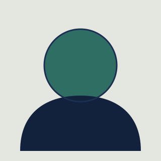

Ljudi i načela iza Sentinel Sigurnosti
Osnovani smo s jednim ciljem: učiniti informacijsku sigurnost razumljivom i dostupnom tvrtkama i školama koje nemaju vlastiti IT sigurnosni tim.
Misija
Pomoći organizacijama da prepoznaju i smanje sigurnosne rizike prije nego što oni prerastu u incidente — kroz jasne analize, konkretne preporuke i edukaciju koja se pamti.
Vizija
Vidimo Hrvatsku u kojoj su i male tvrtke i škole informacijski sigurne koliko i velike korporacije, jer je znanje o zaštiti podataka dostupno svima, a ne samo onima s velikim IT odjelima.
Po čemu smo bolji od drugih
Tržište sigurnosnih usluga zna biti zbunjujuće — puno stručnih izraza, malo konkretnih odgovora. Mi radimo drukčije:
Objašnjavamo, ne plašimo
Svaki nalaz dobivate objašnjen jednostavnim jezikom, s konkretnim koracima za rješavanje — ne samo dugačkim popisom tehničkih problema.
Prilagođeno malim i srednjim organizacijama
Naše usluge i cijene osmišljene su za tvrtke i škole koje nemaju vlastiti sigurnosni tim, a ne samo za velike korporacije.
Edukacija je dio svake usluge
Ne ostavljamo vas s izvještajem koji nitko ne razumije — uz svaku analizu nudimo i kratku edukaciju za zaposlenike o tome kako izbjeći iste probleme ubuduće.
Naš tim
Manji tim stručnjaka koji zajedno pokriva tehničku analizu, testiranje i edukaciju.
Ana Kovačević
Voditeljica sigurnosnih analiza
Ana vodi tim za procjenu rizika i sigurnosne analize web stranica. Prije Sentinela je 6 godina radila u IT odjelu jedne zagrebačke banke, gdje se specijalizirala za zaštitu korisničkih podataka.

Marko Perić
Stručnjak za penetracijsko testiranje
Marko testira sustave klijenata simulirajući stvarne napade kako bi otkrio ranjivosti prije nego što to učini netko s lošim namjerama. Aktivno prati nove tehnike napada i sudjeluje na sigurnosnim konferencijama.
Ivana Horvat
Voditeljica edukacije
Ivana osmišljava i vodi radionice za zaposlenike tvrtki i učenike škola, s naglaskom na prepoznavanje phishing napada i sigurno korištenje interneta u svakodnevnom radu.